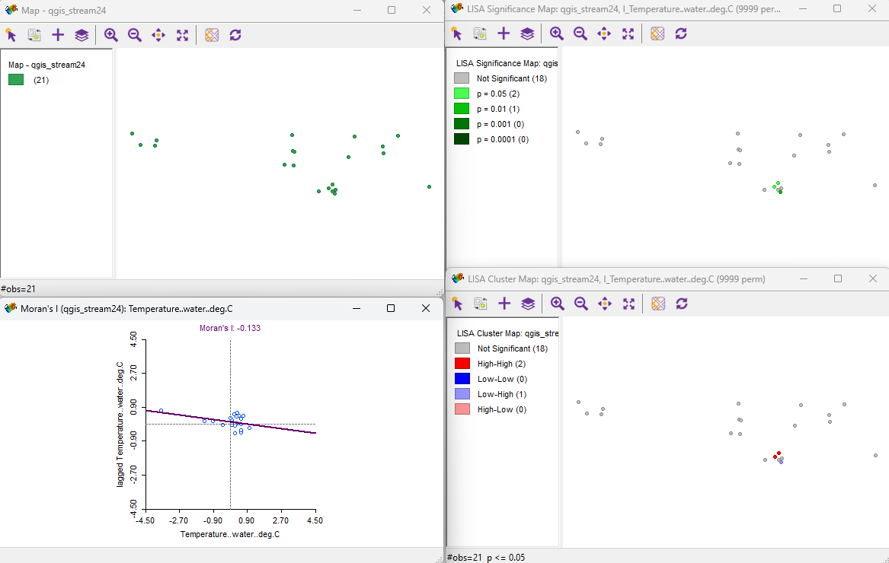
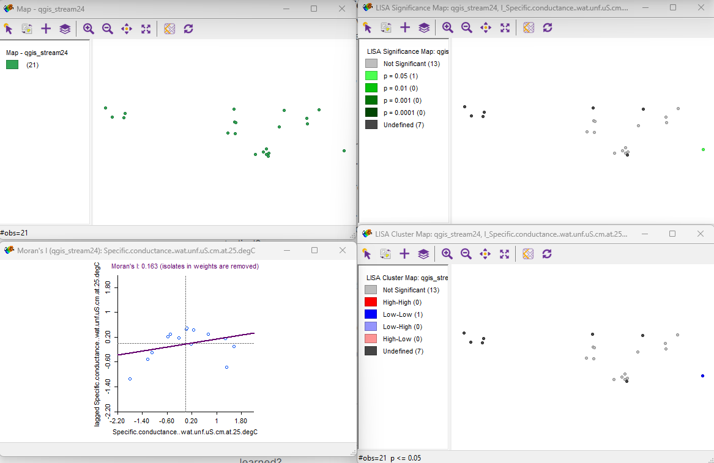
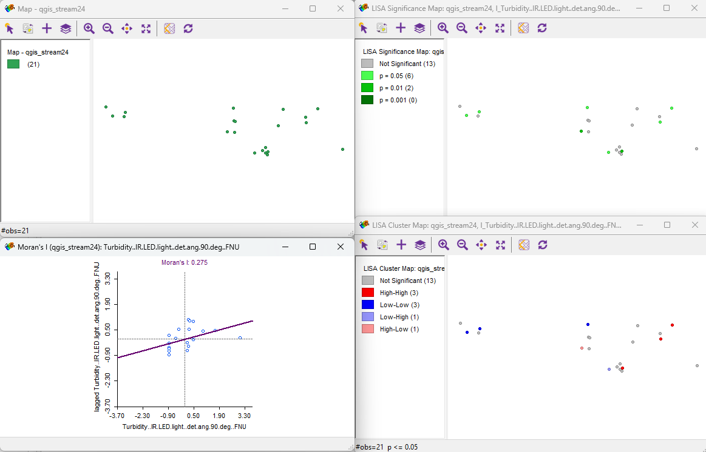

The maintenance of water quality is a pervasive issue that every community faces. While water shifts across a watershed through vegetation, soil pores, streams, wetlands, and oceans (Black, 1997), it also shifts among the human landscape–across pavement, crop fields, industry, cities, homes, and other infrastructure with little resistance. Therefore, as it travels through our waterways it can pick up various pollutants, sediment, and other contaminants that affect the riverine ecosystem—as well as our health.
I am going to be working a job in water resources after I graduate, therefore working with more water data, policy/regulations, and becoming more familiar with Maryland’s data hubs will be important moving forward. In my other class, watershed resources and management, I am currently writing a paper on how the ecological disturbance of urbanization alters hydrologic and geomorphic watershed response, with methods and policy to properly manage it. This project treads a similar line, focusing on water use designations and the chemical responses instead–further expanding my knowledge of watershed management.
In this project, I am analyzing all of these different water metrics in order to determine a relationship between the water use designations of what stream the gauge is representing with the water quality indicators that the gauge can pick up at various locations around Maryland.
Water use designations are where each water body is assigned a use class that outlines its designated uses, which may not be fully supported currently but are considered attainable (Maryland Department of the Environment, 2023). Maryland has defined several use classes with specific designations:
Use Class I: Water Contact Recreation and Protection of Nontidal Warmwater Aquatic Life
Use Class I-P: Water Contact Recreation, Protection of Aquatic Life, and Public Water Supply
Use Class II: Support of Estuarine and Marine Aquatic Life and Shellfish Harvesting, including several subcategories specific to the Chesapeake Bay
Use Class II-P: Tidal Fresh Water Estuary, including Use II and Public Water Supply
Use Class III: Nontidal Cold Water
Use Class III-P: Nontidal Cold Water and Public Water Supply
Use Class IV: Recreational Trout Waters
Use Class IV-P: Recreational Trout Waters and Public Water Supply
In cases where the current designation does not reflect the actual conditions, the Maryland Department of the Environment (MDE) may pursue use redesignation to better protect existing uses. For example, a stream currently classified under Use Class I may be reclassified to Use Class III if it supports cold-water species. Such redesignations are documented and proposed during the Triennial Review.
Water quality refers to the chemical, physical, and biological characteristics of water, typically in relation to its suitability for a specific purpose such as drinking, swimming, or supporting aquatic life. The United States Geological Survey (USGS) is an important resource for finding consistent past and present water quality data. While their data portal contains multitudes of water quality variables, their primary variables that were utilized for this project are temperature, specific conductance, pH, turbidity, dissolved oxygen, and nitrate + nitrite concentrations (United States Geological Survey, 2024). These indicators are defined below:
Temperature: The measure of how warm or cold the water is, which affects the metabolic rates of aquatic organisms and the solubility of gases like oxygen.
Specific Conductance: The ability of water to conduct an electrical current, indicating the concentration of dissolved ions, which is used to estimate water’s salinity and total dissolved solids.
pH: The measure of the acidity or alkalinity of the water, on a scale of 0 to 14, which influences the solubility of nutrients and metals and the health of aquatic life.
Turbidity: The clarity of the water, measured by the amount of suspended particles such as silt, clay, and organic matter, which affects light penetration and can impact photosynthesis and habitat quality.
Dissolved Oxygen: The amount of oxygen gas dissolved in water, crucial for the respiration of aquatic organisms and an indicator of water quality and ecosystem health.
Nitrate + Nitrite Concentrations: The levels of these nitrogen compounds in water, which are indicators of nutrient pollution from sources like agricultural runoff and wastewater, affecting aquatic ecosystems and potentially leading to problems like algal blooms.
Setup
Installing and loading these packages are necessary for data optimization throughout the rest of the script. R packages can be installed by searching it up on the “Packages” tab of RStudio and installing. Then, by using the function “library”, the library of the package can be loaded into the script for use. Short descriptions of each package is detailed next to the corresponding script line below.
Below I acquired the stream gauge data through the USGS, but had to consolidate and organize the data into a sheet for all gauges in Maryland by myself through Excel with the appropriate water quality indicators.
The water quality data was taken from the present (May 2024) and the past (May 2019). I chose 2019 in particular as January 2019 was the last update of these state designations.
Since the data was manually inputted, there was only longitude and latitude data to assign the points of the gauges. To make this data spatially viable, I georeferenced the coordinates and transformed the data from NAD83 to WGS84 for both 2019 and 2024 layers.
# Create sf objectstreamPast19_geo <-st_as_sf(streamPast19, coords =c("LongitudeW", "LatitudeN"), crs =4269)# Transform to EPSG:4326 for plottingstreamPast19_geo <-st_transform(streamPast19_geo, crs =4326)# Display the sf objecthead(streamPast19_geo$geometry)
Geometry set for 6 features
Geometry type: POINT
Dimension: XY
Bounding box: xmin: -77.54311 ymin: 38.99719 xmax: -75.78581 ymax: 39.63008
Geodetic CRS: WGS 84
First 5 geometries:
POINT (-76.69036 39.61906)
POINT (-76.76175 39.36158)
POINT (-75.78581 38.99719)
POINT (-77.54311 39.27358)
POINT (-77.45528 39.63008)
plot(streamPast19_geo$geometry)
# Create sf objectstreamPresent24_geo <-st_as_sf(streamPresent24, coords =c("LongitudeW", "LatitudeN"), crs =4269)# Transform to EPSG:4326 for plottingstreamPresent24_geo <-st_transform(streamPresent24_geo, crs =4326)# Display the sf objecthead(streamPresent24_geo$geometry)
Geometry set for 6 features
Geometry type: POINT
Dimension: XY
Bounding box: xmin: -77.54311 ymin: 38.99719 xmax: -75.78581 ymax: 39.63008
Geodetic CRS: WGS 84
First 5 geometries:
POINT (-76.69036 39.61906)
POINT (-76.76175 39.36158)
POINT (-75.78581 38.99719)
POINT (-77.54311 39.27358)
POINT (-77.45528 39.63008)
plot(streamPresent24_geo$geometry)
I acquired the water use classification data from the Maryland Department of the Environment. While there are three different layers accounting for the many different water bodies of Maryland, I am only taking from the Rivers and Streams layer.
Maryland’s Designated Uses for Surface Waters, last updated in January 2019, displays the use classes assigned to Maryland’s surface waters (rivers, impoundments, and tidal waters) as promulgated in Code of Maryland Regulations (COMAR) Section 26.08.02.08. Maryland classifies surface water bodies according to use classes which describe the suite of specific designated uses or goals for that water body.
# Specify the path to the GDB and the layer namegdb_path <-"../data/MD_Surface_Water_Use_Classes_2019.gdb"layer_name <-"Rivers_Streams_UC_2019"# Read the layer from the GDBallStreams <-st_read(dsn = gdb_path, layer = layer_name)
Reading layer `Rivers_Streams_UC_2019' from data source
`C:\Users\celin\OneDrive\Documents\Ges486\Final Project\final_project\data\MD_Surface_Water_Use_Classes_2019.gdb'
using driver `OpenFileGDB'
Simple feature collection with 82721 features and 18 fields
Geometry type: MULTILINESTRING
Dimension: XY
Bounding box: xmin: 185248.2 ymin: 28148.16 xmax: 569508.3 ymax: 230941
Projected CRS: NAD83 / Maryland
Here are what the water surface classifications allude to. The use of a water body based on these categories are multi-purpose and definitely overlap, but each classification has at least one distinguishing use from the rest.
Below I acquired the Maryland county boundaries through the Maryland Government GIS Data Catalog to distinguish boundaries between counties as a reference areal unit.
Below I export the two georeferenced datasets for use in GeoDa, a free software package that conducts spatial data analysis, geovisualization, spatial autocorrelation and spatial modeling.
#save the shapefile and upload to QGIS, uncomment when exporting out to ensure it only runs once when rendering# st_write(streamPast19_geo, "../data/geoda_stream19.geojson", delete_layer = TRUE, delete_dsn = TRUE)# st_write(streamPresent24_geo, "../data/geoda_stream24.geojson", delete_layer = TRUE, delete_dsn = TRUE)
By exploring the data in GeoDa, below we calculate Univariate Local Moran’s I over multiple water quality variables and time frames to determine the most spatially auto correlated variable. The Univariate Local Moran’s I (under space tab), which is a local spatial autocorrelation statistic that groups neighboring features with similarly high or low attribute values. Not to be confused with Global Moran’s I, it gives multiple local values indicating spatial patterns or anomalies at the local level, which will help distinguish hot spots, cold spots, and spatial outliers.
A positive Moran’s I index value indicates tendency toward clustering, while a negative Moran’s I index value indicates tendency toward dispersion

Temperature

Specific Conductance

Turbidity
Here, we find turbidity to have the most statistically significant clustering, with a Moran’s I of 0.275. As turbidity appears to be the most spatially autocorrelated, we will use that indicator in our visualizations. Spatial autocorrelation refers to the degree to which one object is similar to other nearby objects in a spatial distribution. Understanding the spatial significance of what the stream gauges are measuring is a step towards defining the relationship between water use designations and water quality.
Note that there is not a lot of gauges, and therefore not a lot of data. I believe that more data points would produce a higher degree of accuracy.
Visualizations
Below I plot all variables pulled below into one cohesive map to get an overall visual.
ggplot() +geom_sf(data = mdBoundaries, color ="lightgrey", fill =alpha("lightgrey", 0)) +geom_sf(data = allStreams, aes(color = Des_Use, fill = Des_Use)) +labs(title ="Stream Water Quality and Use") +#rename legend and separate the legend entried into three columns guides(fill =guide_legend(title ="Designated Use Category"),color =guide_legend(title ="Designated Use Category")) +#place the legend on the bottom of the map and set the legend text sizetheme(legend.position ="bottom", legend.text =element_text(size =8), legend.title =element_text(size =9)) +geom_sf(data = streamPresent24_geo, color ="black", fill ="lightgrey") +#insert scalebarcoord_sf(crs =st_crs(4326)) +#project the data so that measurements in the scale bar make senseannotation_scale(location ="bl", width_hint =0.25) +#tl = top left, could not figure out how to change the units to mi, plot_unit = "mi" did not work#insert north arrowannotation_north_arrow(location ="tr", which_north ="true",pad_x =unit(0.05, "in"), pad_y =unit(0.05, "in"),height =unit(0.4, "in"), width =unit(0.25, "in"),style = north_arrow_fancy_orienteering)
Designated Water Use
I have the table attached again here for easy comparison of the designated use category to qualitative data.
Below is an interactive map for further exploration at different scales.
# This creates an interactive map similar to the static map above. This is a very intensive process to render, so uncomment the chunk below to run# mapview(allStreams, layer.name = "Rivers and Streams", label = "Des_Use", zcol = "Des_Use", lwd = 2) +# mapview(streamPresent24_geo, layer.name = "Stream Gauge Turbidity", label = "Turbidity..IR.LED.light..det.ang.90.deg..FNU", col.regions = "black", color = "black", alpha.regions = 1)
Further visualization in QGIS
With some newfound statistical findings and the data looking clean, further visualizations can be created in QGIS.
#save the shapefile and upload to QGIS, uncomment when exporting out to ensure it only runs once when rendering# st_write(streamPast19_geo, "../data/qgis_stream19.geojson", delete_layer = TRUE, delete_dsn = TRUE)# st_write(streamPresent24_geo, "../data/qgis_stream24.geojson", delete_layer = TRUE, delete_dsn = TRUE)# st_write(allStreams, "../data/qgis_allStreams.geojson", delete_layer = TRUE, delete_dsn = TRUE)# st_write(mdBoundaries, "../data/qgis_mdBoundaries.geojson", delete_layer = TRUE, delete_dsn = TRUE)
Below is a map with all three variables in QGIS, but zoomed into an area of interest between Montgomery County and Prince George’s County, with the biggest cluster of gauges in Maryland.
QGIS Map of Turbidity Level Change with Water Use Designations in Montogomery and Prince George’s County Streams
Designated Water Use
I have the table attached again here for easy comparison of the designated use category to qualitative data.
Discussion and Reflection
There was much less gauge data than I was expecting, as I was expecting there to be more gauges in Maryland–at least one in every county, but that was not the case. While they do mark critical points of downstream flow and tributaries, I believe more gauges will be necessary in order to monitor water quality change on a consistent basis.
The results available are heavily influenced by the gauges present in the area. As you can see from the map the reported gauges are in a constricted region which limits the evaluation of the water quality in a zone to zone basis of what the water is being used for. Each color defines a usage and most gauges appear exclusively in the I (yellow) region. Knowing the true effects of different water uses on water quality would require more in depth resources and more accessibility of gauges in the water to see if their is use specific correlation, especially considering water is not stagnant.